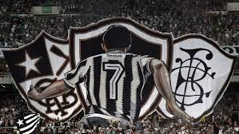

A Loja Torcedores do Botafogo nasceu com a missão de ser o ponto de encontro ideal para os apaixonados pelo Glorioso. Somos uma loja especializada em produtos exclusivos para os torcedores do Botafogo, oferecendo uma vasta gama de itens oficiais e personalizados, que vão desde camisas e agasalhos até acessórios e memorabilia. Nosso compromisso é proporcionar a cada fã uma experiência única, com qualidade, autenticidade e variedade, para que o torcedor sinta-se sempre conectado ao seu time, seja dentro de campo ou no dia a dia. Trabalhamos com as melhores marcas e fornecedores, garantindo que nossos produtos representem toda a tradição, história e a paixão que envolvem o Botafogo de Futebol e Regatas. Aqui, entendemos o que é ser Botafogo. É mais que uma simples torcida, é uma cultura, um estilo de vida, uma ligação emocional que vai além do esporte. Por isso, buscamos sempre levar aos nossos clientes o melhor atendimento e os produtos que refletem o orgulho de ser alvinegro. Junte-se a nós e mostre com orgulho o seu amor pelo Botafogo! Seja para torcer no estádio, para presentear ou para compor seu estilo de vida, temos o produto certo para você. Vamos juntos fazer história! A loja de torcedores apaixonados que vendem produtos sobre o time carioca, Botafogo de futebol e regatas. Aqui, a história do Botafogo é celebrada em cada item. Desde a camisa tradicional para vestir com orgulho, até acessórios exclusivos que fazem qualquer torcedor se sentir ainda mais conectado com o time. Quer mostrar sua paixão também no dia a dia? Ou quem sabe preparar a festa de jogo com os amigos? Temos tudo isso e muito mais! "Ninguém cala a nossa paixão!"
Explore nossa seleção de roupas, acessórios, decoração, presentes e produtos licenciados, todos com o selo de qualidade que o Botafogo merece. Cada peça é uma forma de manter o Glorioso no coração e na vida.
Camisa da estrela solitaria, A melhor camisa de time!!
feita com uma tecnologia que se acomodar em seus pés, para andar no estilo do torto do mané garrincha.
Feita de cana e choro dos rivais.